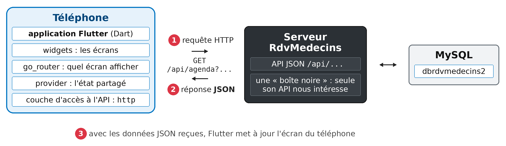

1. Introduction
Le PDF du document est ICI.
Les codes du document sont ICI.
Ce document est un produit de l'IA Claude d'Anthropic. Il fait suite au cours Introduction étape par étape au framework web React, dont il reprend le plan, les exemples et l'étude de cas, et en change la cible :
- dans les cours [React], [Vue.js] et [Angular], l'application tourne dans un navigateur ; elle est faite de HTML, de CSS et de [JavaScript] ;
- dans ce cours, l'application est une application mobile, écrite avec le framework [Flutter] et le langage [Dart], qui tourne sur un téléphone [Android]. Le même code, sans rien changer, produit aussi une application web (et une application [Windows], [macOS] ou [Linux]).
Le serveur, lui, ne change pas : c'est le serveur JSON [RdvMedecins] des cours précédents, écrit avec [NestJS]. Et les écrans de l'application sont ceux que les lecteurs des autres cours connaissent déjà (connexion avec captcha, agenda d'un médecin, fenêtre de réservation, espace du patient, gestion des médecins et des clients, création d'un compte, français et anglais), adaptés à un écran de téléphone.
Le document suit la même progression que ses prédécesseurs : d'abord de nombreux petits exemples, chacun centré sur une notion de [Flutter], puis une étude de cas complète, le client [Flutter] de l'application [RdvMedecins], dont tous les fichiers sont commentés. Les 25 exemples portent les mêmes numéros que ceux du cours [React] : le lecteur qui connaît [React], [Vue.js] ou [Angular] retrouvera les mêmes exemples, écrits à la manière de [Flutter].
Un cours existe déjà sur ce sujet : Un exemple de client / serveur Flutter / NestJS (2026), qui présente d'emblée un client complet. Le présent document s'en distingue par sa démarche : on apprend [Flutter] pas à pas, par de petits exemples, avant de s'attaquer au client complet ; et le serveur y est une boîte noire, dont seule l'API JSON nous intéresse.
Les bases du langage [Dart] sont supposées connues : elles sont présentées dans le cours Introduction au langage Dart par l'exemple (2026). Les traits du langage propres à [Flutter] (paramètres nommés, classes, [async] / [await], collections...) sont cependant rappelés au fil des exemples, au moment où ils servent.
1.1. La place de Flutter dans une application client / serveur
L'application a deux parties, qui ne se parlent que par des requêtes HTTP :

- 1 : l'application [Flutter], exécutée par le téléphone, envoie une requête HTTP au serveur, par exemple [GET /api/agenda?idMedecin=1&jour=2026-10-05] ;
- 2 : le serveur répond par des données JSON : l'agenda de ce médecin, ce jour-là. Il ne fabrique aucune page ;
- 3 : avec ces données, [Flutter] met à jour l'écran du téléphone.
C'est exactement l'architecture des clients [React], [Vue.js] et [Angular] : seul change ce qui fabrique l'affichage. Là où un navigateur construit une page à partir de HTML et de CSS, [Flutter] dessine lui-même chaque pixel de l'écran, avec son propre moteur graphique. Il n'utilise pas les composants du système (les boutons d'[Android] ou d'[iOS]) : il les imite, ou en propose d'autres. C'est ce qui lui permet d'afficher la même application, au pixel près, sur un téléphone [Android], un [iPhone], dans un navigateur ou sur un ordinateur.
[Flutter] est un framework créé par [Google] et publié en 2018. C'est aujourd'hui le framework le plus utilisé pour écrire, avec un seul code, des applications mobiles pour [Android] et [iOS]. Il repose sur trois idées :
- tout est widget : l'écran est décrit par un arbre de widgets, des objets qui représentent chacun un morceau de l'interface : un texte, un bouton, une marge, une colonne, un écran entier. On fabrique ses propres widgets en assemblant ceux de [Flutter] ;
- l'interface est une fonction de l'état : un widget a une méthode [build()] qui décrit ce qu'il faut afficher, à partir de ses données. Quand les données changent ([setState()]), [Flutter] rappelle [build()], compare le nouvel arbre à l'ancien, et redessine ce qui a changé. On n'écrit jamais de code qui modifie l'écran : on décrit l'écran en fonction de l'état. Le lecteur du cours [React] reconnaîtra le principe : c'est celui des composants et de [useState] ;
- un langage, [Dart], compilé en code machine pour le téléphone (d'où des applications rapides), en [JavaScript] ou en [WebAssembly] pour le navigateur. Pendant le développement, [Dart] permet le rechargement à chaud : une modification du code est appliquée à l'application en cours d'exécution, en une seconde, sans perdre son état.
Comme [React], [Flutter] n'est pas un framework « à tout compris » pour le dialogue avec un serveur : le client HTTP, le routeur, l'état partagé, les traductions sont fournis par des paquets (des bibliothèques), publiés sur le site pub.dev. Ce cours utilise ceux que recommande la documentation de [Flutter] et que maintient, pour la plupart, l'équipe de [Flutter] elle-même : [http] (les requêtes HTTP), [go_router] (le routeur), [provider] (l'état partagé), [shared_preferences] (un petit stockage sur l'appareil), [intl] (dates et nombres dans chaque langue), [flutter_svg] (les images SVG).
1.2. Les outils utilisés
Les exemples ont été écrits et testés avec les outils suivants (leur installation est décrite en annexe) :
- le SDK [Flutter] 3.44, qui contient le SDK [Dart] 3.12 ;
- l'éditeur [Visual Studio Code] et son extension [Flutter] (qui installe aussi l'extension [Dart]) ;
- [Android Studio], seulement pour son gestionnaire d'émulateurs et le SDK [Android] : un émulateur [Android] (un téléphone simulé sur l'ordinateur), ou un vrai téléphone [Android] relié à l'ordinateur ;
- le navigateur [Chrome], pour la version web des applications ;
- le SGBD [MySQL] (ou [MariaDB]), par exemple celui de [Laragon] sous [Windows], et [Node.js] : ils sont nécessaires au serveur JSON, à partir du chapitre qui le présente ;
- l'outil en ligne de commande [curl], qui affiche les réponses HTTP brutes.
Les paquets utilisés sont ceux des fichiers [pubspec.yaml] : [go_router] 16, [provider] 6, [http] 1.5, [shared_preferences] 2.5, [flutter_svg] 2, [intl], et les paquets [flutter_localizations] et [flutter_test] fournis avec [Flutter].
1.3. Les copies d'écran
Les copies d'écran de ce document ont été fabriquées automatiquement, par des tests [Flutter] (dossiers [test/captures] des projets) : chaque test lance un exemple, le manipule comme le ferait un utilisateur (saisies, appuis sur les boutons), puis demande au moteur de [Flutter] de dessiner l'écran dans un fichier image, à la taille d'un téléphone [Android] (1080 x 2340 pixels). Ce sont donc de vrais écrans de l'application, dessinés par le même moteur que sur le téléphone ; il leur manque seulement la barre d'état du téléphone (heure, batterie) et le clavier virtuel. Le chapitre sur le premier exemple montre la même application sur un émulateur [Android].
1.4. Les exemples
Les codes du document sont rangés dans trois dossiers :
Les exemples forment un seul projet [Flutter], dont chaque exemple occupe un dossier de [lib/] :
Les dossiers propres à chaque plate-forme ([android/], [web/], [windows/]) ne sont pas fournis en entier : ce sont de petits projets [Android], web et [Windows], que [Flutter] sait fabriquer, et qui dépendent de la version de [Flutter] installée. On les fabrique une seule fois, puis on télécharge les paquets, dans une console ouverte sur le dossier [exemples_flutter] (dans [VS Code] : menu Terminal / Nouveau terminal) :
[flutter create .] (le point : le dossier courant) complète le projet sans modifier les fichiers existants : le fichier [android/app/src/main/AndroidManifest.xml] fourni (cf. exemple 22) est conservé. Si l'on oublie cette étape, [flutter run] échoue sur un téléphone avec un message trompeur : « Build failed due to use of deleted Android v1 embedding » ([Flutter] ne trouve pas le projet [Android], et suppose qu'il est très ancien).
puis on lance un exemple, en donnant son fichier [main.dart] avec l'option [-t] (pour « target », la cible) :
[flutter run] demande sur quel appareil lancer l'application, s'il en trouve plusieurs (un émulateur [Android], [Chrome], [Windows]...). On peut le préciser avec l'option [-d] (pour « device ») :
Pendant que l'application tourne, la console accepte quelques commandes d'une lettre : r (rechargement à chaud : la modification du code est appliquée, l'état est conservé), R (redémarrage à chaud : l'application repart de zéro), q (arrêt). Dans [VS Code], on peut aussi ouvrir le fichier [main.dart] d'un exemple et appuyer sur F5 ; l'appareil se choisit alors dans la barre d'état, en bas à droite de la fenêtre.
Les exemples 22 à 25 interrogent le serveur JSON [RdvMedecins] : il faudra alors l'avoir installé et lancé, comme expliqué au chapitre qui lui est consacré.
1.5. Contenu du document
Chapitre | Contenu | Exemples |
Premiers pas | un projet Flutter, les widgets, l'état (setState), les événements, les champs de saisie, un réducteur, la validation, Form et FormField, la mise en forme (intl) | 01 à 09 |
Les widgets | paramètres, fonctions en paramètres, composition (child, builders), cycle de vie, données héritées (InheritedWidget), comportements réutilisables (mixins, animations), fenêtre de confirmation | 10 à 16 |
Le routage | go_router : routes, paramètres, coquille, redirections, gardes | 17 et 18 |
L'asynchrone et l'état partagé | Future, Stream, minuteries, anti-rebond, réponses périmées, FutureBuilder, StreamBuilder, provider, shared_preferences | 19 et 20 |
Internationalisation | une application en français et en anglais | 21 |
Le serveur, une boîte noire | installation du serveur JSON, son API, exemples curl | - |
Dialoguer avec le serveur | le paquet http, l'adresse du serveur, le cookie du jeton, une couche d'accès à l'API, un modèle de vue, les erreurs du serveur | 22 à 25 |
Étude de cas | le client Flutter de l'application RdvMedecins | - |
Déploiement | le client web compilé, servi par le serveur JSON ; l'application Android | - |
Chaque exemple est présenté avec son code complet, commenté ligne par ligne, et des copies d'écran de son exécution. Les codes sont eux-mêmes abondamment commentés : leurs commentaires font partie du cours.